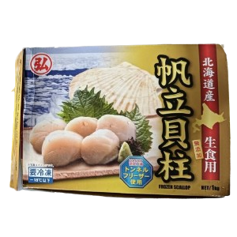

帆立貝柱（北海道生食級干貝）

來自北海道純淨海域，急速冷凍保鮮
保留最佳新鮮度與甜度，肉質緊實飽滿、Q 彈多汁，海味十足。
干貝是高級海鮮食材，不論日式、法式、義式料理中都常見其身影。
「帆立貝柱」又稱「干貝」、「貝柱」、「瑤柱」、「帶子」
是扇貝去殼、去唇、去精巢後所取下的圓形貝柱部位。
生食級干貝通過日本農林水產檢驗，品質穩定，色澤飽滿可直接生食。
干貝尺寸說明
2L、L、M、S、2S、3S...等代表每公斤的顆數分類，顆數越少代表干貝越大，肉更厚、甜度高。
商品規格
- 產品名稱：北海道帆立貝柱
- 內容量：500g ±10g（示意，請確認實際包裝）
- 建議售價：1200 元 / 盒
- 規格尺寸：L
- 產地：日本 北海道
- 保存方式：冷凍 -18°C 以下
- 有效期限：標示於包裝
- 食用建議：解凍即食、生魚片、香煎、炙燒、火鍋皆宜
貼心提醒
- 食用前請冷藏退冰，勿重複冷凍
- 退冰後請盡速食用
- 生食需視個人健康情況酌量